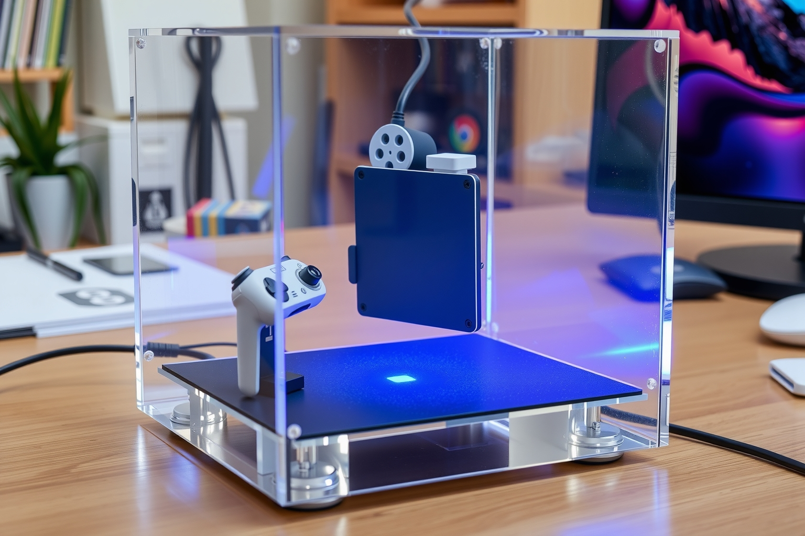
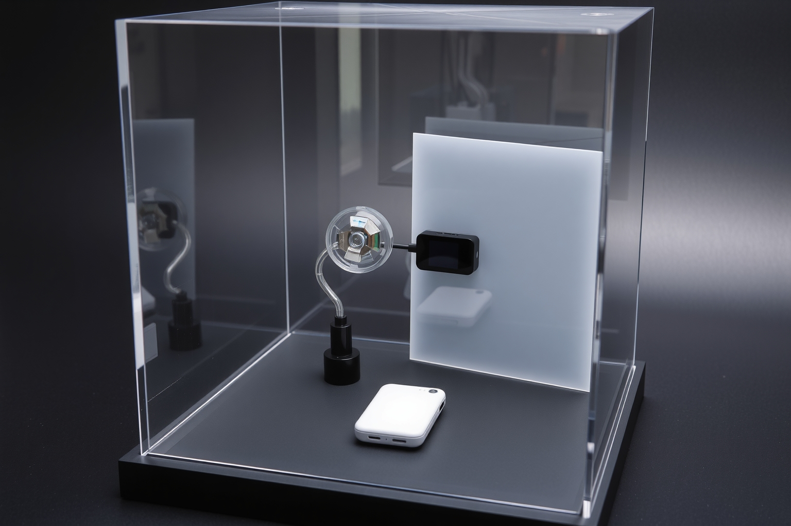

Industrial design exploration · Rev 0.1
entropy c
Four visual languages for a portable optical entropy experiment: product visualization, whiteboard ideation, engineering blueprint, and technical ink cutaway.

Selected enclosure study — 311 × 197 × 197 mm
Based on the $31.99 Luxe Acrylic Football Display Cube from The Container Store. Its tight-fitting lid becomes the bottom; a removable black insert carries the complete mechanism. The image explores scale and packaging only—the mirror rotor and projection path need another visual iteration.

Optical-path study
One moving faceted mirror transforms ambient light, a fixed dichroic tile adds spatial color, and a hooded camera sees only a frosted projection plane. One optical assembly replaces the earlier five decorative prisms.